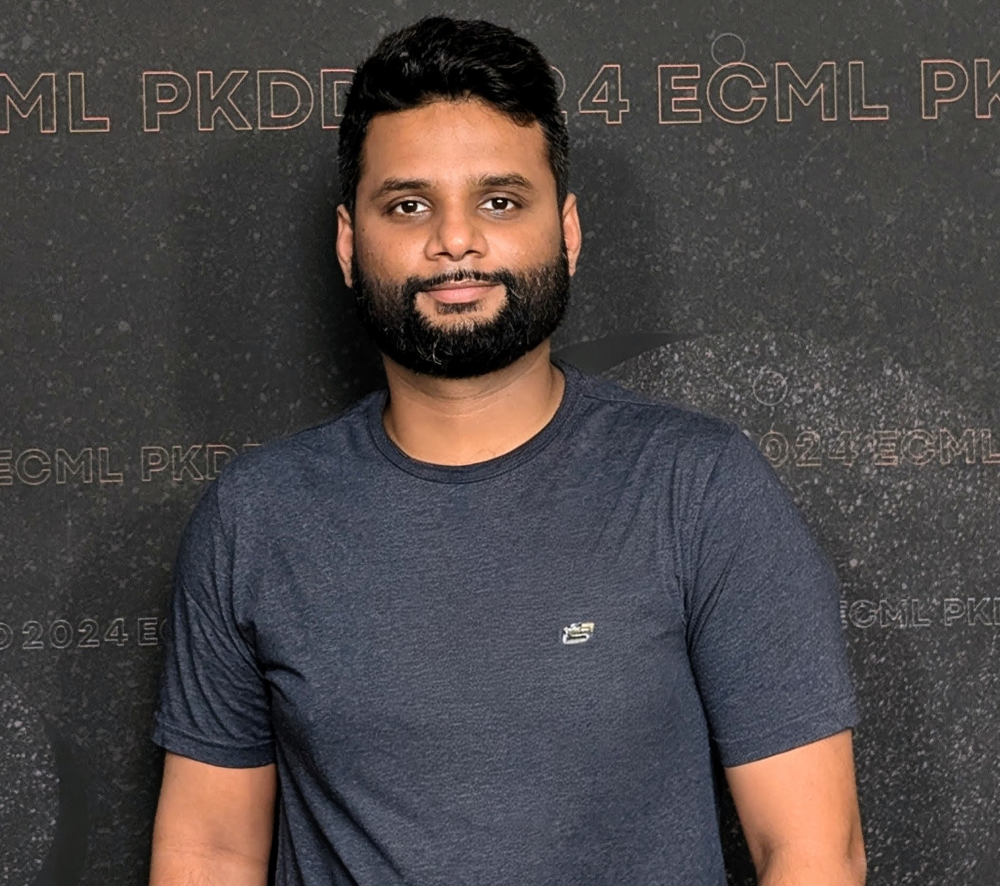

Hi 👋, I’m Abhijeet Pendyala#
{kind=link}
I am a Machine Learning Engineer and PhD researcher with 7+ years of experience in Industrial AI, Computer Vision, and platform development. My expertise lies in designing and deploying scalable, production-grade ML systems that solve complex, real-world problems. I translate state-of-the-art research into robust, production-grade software, leveraging expertise in MLOps, scalable system design, and model optimization for edge devices.
Core Expertise#
I am proficient across the entire ML lifecycle, with deep experience in research, system design, and deployment.
Area |
Skills |
|---|---|
Leadership & Management |
Engineering leadership, project management, agile methodologies, sprint rituals, team management |
Research & Algorithms |
Deep Reinforcement Learning (PPO, curriculum learning), Convex Optimization (ACF-BDCA), Classical ML (XGBoost, SVM) |
Computer Vision & Perception |
Object detection, segmentation, model compression, synthetic data generation |
ML Platforms & DevOps |
MLOps (MLflow, DVC, Weights & Biases), Packaging (Poetry, Sphinx), CI/CD (GitHub Actions), Containerization (Docker, Kubernetes) |
Development & Engineering |
Python, C++, PyTorch, TensorFlow/Keras, Pandas, FastAPI, Django, PostgreSQL/MongoDB |
Featured Experience & Publications#
PhD Research: Industrial AI & Reinforcement Learning#
My doctoral research focused on developing end-to-end deep reinforcement learning solutions for a complex industrial control system. I designed a hybrid approach that combined a Proximal Policy Optimization (PPO) agent with a novel curriculum learning strategy and an offline-trained predictive model to manage resource allocation, enhance operational safety, and prevent system failures.
Featured Publications#
Curriculum RL meets Monte Carlo Planning: Optimization of a Real World Container Management Problem
A. Pendyala & T. Glasmachers, **ECML 2025**
Solving a Real-World Optimization Problem: Using Proximal Policy Optimization with Curriculum Learning and Reward Engineering
A. Pendyala, A. Atamna & T. Glasmachers, **ECML 2024**
ContainerGym: A Real-World Reinforcement Learning Benchmark for Resource Allocation
A. Pendyala, J. Dettmer, T. Glasmachers & A. Atamna, **LOD 2023**
Online Budgeted Stochastic Coordinate Ascent: For Large-Scale Kernelized Dual Support Vector Machine Training
S. Qaadan, A. Pendyala et al., **ICPRAM 2020**
ML Software Engineering: EcoKI Platform#
My work on the EcoKI project focused on designing core architectural frameworks for a low-code ML platform. I was responsible for:
Developing a microservices architecture and modular BuildingBlock and Pipeline systems.
Engineering and implementing end-to-end ML workflows, from data preprocessing to time-series forecasting.
Standardizing engineering practices, including automated testing protocols and Sphinx-based technical documentation.
Computer Vision & Perception Projects#
I have extensive experience developing machine learning solutions for computer vision and autonomous systems. Key experiences include:
Autonomous Driving (Kopernikus Automotive): Developed and optimized perception models for object detection and localization (RetinaNet, YOLO) for autonomous vehicles. Implemented model compression techniques with TensorRT for deployment on edge devices.
Fish Recognition App (Freelance): Helped to develop an app to identify fish species, predict length, and detect key points (mouth, tail) using PyTorch and Keras image regression models. This involved extensive work on data augmentation and synthetic dataset generation.
Get in Touch#
Download my CV in PDF format: Abhijeet Pendyala - CV.pdf
Read my blog: ML Blog